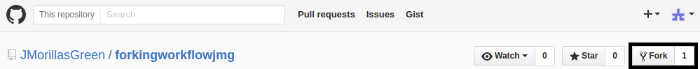
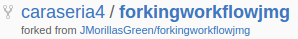
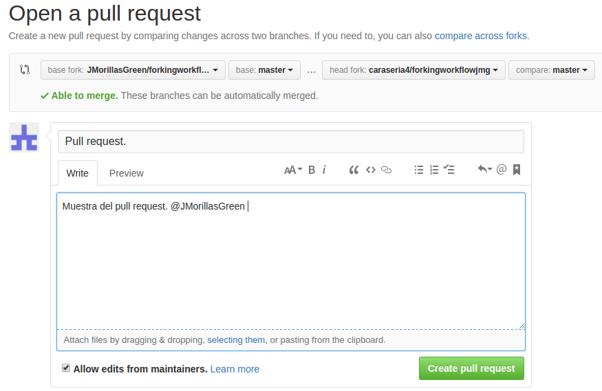

Forking Workflow es, fundamentalmente diferente a cualquier otro workflow del que se haya hablado, porque a diferencia de usar un repositorio que haga de base de código central, facilita a cada desarollador su propio repositorio, haciendo que cada contribuidor no tenga uno, sino dos repositorios GIT: uno privado y local y otro público en el servidor.
La principal ventaja de Forking Workflow es que los contribuidores pueden ser integrados sin la necesidad de que todos suban a un repositorio central. Los desarrolladores suben a su propio repositorio y sólo el mantedor puede subir al repositorio oficial. Esto permite al mantenedor aceptar commits de cualquier desarrollador sin darle acceso a la base de código oficial. Con ésto, se pueden tener grandes y organizadoes equipos que colaboran de manera segura, además de hacer un entorno de trabajo ideal para los proyectos open source (código abierto).
¿Cómo funciona?
Para empezar, nos usaremos de ejemplo a Álvaro y a mi. Yo he creado el repositorio "forkingworkflowjmm" y he subido esta página al repositorio con su correspondiente directorio de imágenes salvo esta parte, y, Álvaro ha creado el fork de el repositorio oficial pulsando el botón "FORK" en mi repositorio.


Perfecto. Ahora que tenemos el repositorio oficial y el fork creado, el que haya creado el FORK, deberá clonar su repositorio y no el oficial, y a partir de ahí trabajar.
Una vez que el fork haya terminado los cambios, hará un commit en su repositorio y entonces piden un pull request al repositorio oficial que hará que el mantenedor sepa que hay una nueva o varias actualizaciones..
Para empezar, nos usaremos de ejemplo a Ángel, a Álvaro y a mi. Yo he creado el repositorio "forkingworkflowjmm" y he subido esta página al repositorio con su correspondiente directorio de imágenes salvo esta parte, y, Álvaro ha creado el fork de el repositorio oficial pulsando el botón "FORK" en mi repositorio.
Perfecto. Ahora que tenemos el repositorio oficial y el fork creado, el que haya creado el FORK, deberá clonar su repositorio y no el oficial, y a partir de ahí trabajar.
Una vez que el fork haya terminado los cambios, hará un commit en su repositorio y entonces piden un pull request al repositorio oficial que hará que el mantenedor sepa que hay una nueva actualización.

Finalmente, el mantenedor del repositorio oficial, hará un pull de los cambios del contribuidor en su repositorio local, se asegura que no rompa el proyecto, lo une a su rama master local, y hace un push a la rama masted del repositorio oficial.